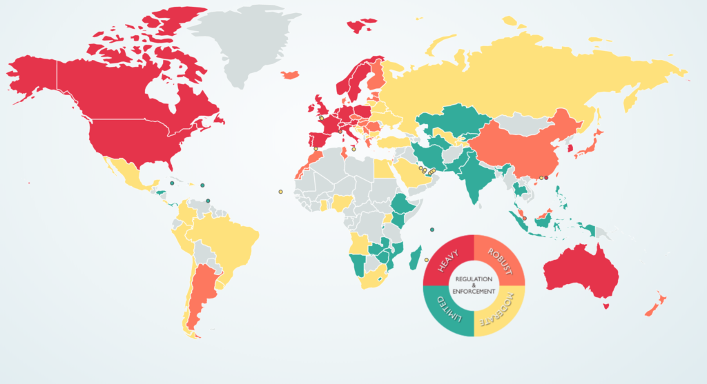

9.9 Segurança e privacidade


Imagem: © 2019 DLA Piper
{kind=link}
A letra "S" representa também uma alteração face ao modelo ACTIONS anterior, no qual correspondia à velocidade (speed), na acepção da rapidez com que uma tecnologia permitia o desenvolvimento de uma disciplina. Contudo, as temáticas anteriormente analisadas no âmbito da velocidade foram incorporadas no parâmetro "Facilidade de utilização" do modelo SECTIONS (Capítulo 9, Seção 3). Isto permite substituir a "velocidade" pela "Segurança e privacidade", questões com importância de relevância crescente na educação na era digital.
9.9.1 A necessidade de privacidade e segurança no ensino
Professores, formadores e estudantes necessitam de um espaço reservado para trabalhar on-line. Os docentes pretendem ter a liberdade de analisar de forma crítica decisões de governantes ou organizações sem receio de represálias; os estudantes podem preferir manter comentários espontâneos ou posições radicais fora do domínio público, ou pretender debater ideias controversas sem que estas sejam difundidas no Facebook. As instituições visam salvaguardar os estudantes da recolha de dados pessoais para fins comerciais por empresas privadas, do rastreio das suas atividades letivas on-line por agências governamentais, ou de ações de marketing e outras interferências comerciais ou políticas nas suas atividades letivas. Em particular, as instituições procuram proteger os estudantes, na medida do possível, de práticas de assédio ou intimidação on-line. A criação de um ambiente letivo controlado viabiliza uma gestão mais eficaz da privacidade e segurança pelas instituições.
Os sistemas de gestão de aprendizagem (LMS) garantem acessos protegidos por senha a estudantes inscritos e docentes autorizados. Inicialmente, estes sistemas eram alojados em servidores geridos pela própria instituição. O recurso a senhas e servidores seguros tem assegurado essa proteção. As diretrizes institucionais sobre o comportamento on-line adequado tornam-se mais simples de gerir caso as comunicações sejam tratadas internamente.
9.9.2 Serviços baseados na nuvem e privacidade
Contudo, em anos recentes, registrou-se uma migração crescente de serviços on-line para a nuvem, com alojamento em servidores de grande escala cuja localização geográfica é frequentemente desconhecida para o departamento de TI da instituição. Os contratos estabelecidos entre as instituições de ensino e os prestadores de serviços na nuvem visam garantir a segurança e as cópias de segurança.
No entanto, instituições e entidades reguladoras de privacidade, em particular no Canadá, têm demonstrado reservas face ao alojamento de dados fora do país, onde estes podem ficar sujeitos à legislação de outras jurisdições. Registou-se preocupação sobre a possibilidade de informações e comunicações de estudantes canadenses alojadas em servidores nos EUA serem acessadas através da lei norte-americana Patriot Act. A título de exemplo, Klassen (2015) refere:
As empresas de mídias sociais estão sediadas quase exclusivamente nos Estados Unidos, onde se aplicam as disposições da lei Patriot Act, independentemente da origem da informação. A lei Patriot Act autoriza o governo dos EUA a aceder aos conteúdos das mídias sociais e a dados de identificação pessoal sem o conhecimento ou autorização dos utilizadores finais. O governo da Colúmbia Britânica, preocupado com a privacidade e a segurança das informações pessoais, promulgou legislação rigorosa para salvaguardar os dados dos cidadãos da província. A Lei de Liberdade de Informação e Proteção da Privacidade (FIPPA) determina que nenhum dado de identificação pessoal dos cidadãos da Colúmbia Britânica pode ser recolhido sem o seu conhecimento e consentimento, e que esses dados não podem ser aplicados para fins distintos daqueles que motivaram a recolha original.
As preocupações relativas à privacidade dos estudantes intensificaram-se perante o conhecimento de que os países compartilham informações de inteligência, subsistindo o risco de que dados alojados em servidores no Canadá possam ser compartilhados com entidades estrangeiras.
Um aspecto de particular relevância prende-se com o fato de a comunicação acadêmica ficar exposta e pública com a utilização crescente de mídias sociais por professores e estudantes. Bishop (2011) analisa os riscos para as instituições na utilização do Facebook:
- a privacidade difere da segurança, na medida em que a segurança constitui uma questão técnica, gerida predominantemente pelas TI. A privacidade exige políticas específicas que envolvem diversos setores da instituição, pressupondo uma abordagem de governança distinta e mais complexa;
- muitas instituições carecem de diretrizes de privacidade simples e transparentes, registando-se políticas dispersas definidas por diferentes instâncias internas. Esta realidade conduz a ambiguidades e a dificuldades de conformidade;
- assiste-se a uma diversidade de leis e regulamentos de proteção de dados aplicáveis a estudantes e pessoal letivo; as políticas de privacidade devem apresentar consistência a nível institucional e cumprir as legislações em vigor;
- as diretrizes de privacidade do Facebook colocam muitas das instituições que recorrem a esta rede sob risco elevado de violação de leis de proteção de dados — a mera inclusão de declarações de isenção de responsabilidade (disclaimers) revela-se insuficiente na maioria dos casos para evitar infrações legais.
A polêmica ocorrida na Universidade de Dalhousie, na qual estudantes de medicina dentária utilizaram o Facebook para formular comentários sexistas e violentos sobre as suas colegas, constitui um exemplo dos riscos associados à utilização de mídias sociais.
9.9.3 A necessidade de equilíbrio
Embora existam áreas do ensino nas quais se revela indispensável trabalhar em ambientes reservados — como na medicina, segurança pública ou em debates sobre questões políticas ou morais complexas —, genericamente registram-se poucas incidências de privacidade ou segurança quando os docentes abrem as suas disciplinas, seguem as diretrizes institucionais e, sobretudo, quando professores e alunos adotam comportamentos éticos e de bom senso. Contudo, à medida que o ensino assume caráter mais aberto e público, o nível de risco regista um acréscimo.
9.9.4 Questões para ponderação
1. Quais dados dos estudantes sou obrigado a manter em privacidade e segurança? Quais as diretrizes da minha instituição sobre esta matéria?
2. Qual o risco de violação das diretrizes de privacidade da instituição ao adotar uma determinada tecnologia? Quem na instituição me pode prestar esclarecimentos sobre este tema?
3. Quais dinâmicas de ensino e aprendizagem necessito de manter em ambiente de acesso reservado, disponível apenas aos alunos inscritos? Quais tecnologias me apoiarão melhor a alcançá-lo?
Referências
Bishop, J. (2011) Facebook Privacy Policy: Will Changes End Facebook for Colleges? The Higher Ed CIO, October 4
Klassen, V. (2015) Privacy and Cloud-Based Educational Technology in British Columbia Vancouver BC: BCCampus
Ver também:
Bates, T. (2011) Cloud-based educational technology and privacy: a Canadian perspective, Online Learning and Distance Education Resources, March 25
Atividade 9.9 Segurança e privacidade
- Quem na sua instituição o pode esclarecer sobre as diretrizes institucionais ou a legislação nacional relativas à utilização de mídias sociais ou redes externas às infraestruturas da própria instituição?
Clique no podcast abaixo para ouvir as minhas considerações pessoais sobre este tema:
Um elemento de áudio foi excluído desta versão do texto. Você pode ouvi-lo on-line aqui: https://pressbooks.bccampus.ca/teachinginadigitalagev2/?p=249